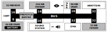

This article is part of a study about the ports of Another World. It is highly recommended to read Another World 101 before reading this.
Game Boy Advance
In 1989, Nintendo released a handheld console named "Game Boy". The modest specs of the machine made of a weak 8-bit Sharp LR35902 CPU, four greenscale display, and no back-light did not scare away customers. It became a worldwide phenomenon able to outsell competitors with seemingly superior technology such as the Sega Game Gear, the Atari Lynx, and NEC's TurboExpress.
A superior battery life, a robust construction, and quality games took Nintendo a long way. The smashing success turned out to be the beginning of the "Game Boy Family" which welcomed the Game Boy Pocket in 1996, the Game Boy Light and the Game Boy Color in 1998. Cumulative sales of the three early "boys" totaled close to 120 millions units.
Over the course of nine years, the core technology did not evolve much. Even though the line saw improvements such as colors, CPU frequency, memory, battery life, weight, and size, the CPU remained a 8-bit Sharp LR35902. As a new decade started, the family found itself in dear need for a new, more powerful, member.
The Game Boy Advance (GBA) was released worldwide in 2001. In the USA it became the fastest-selling video game console with 500,000 unit sold in the first week. By late 2009, the GBA had sold 81.51 million units worldwide[1].
Perhaps more importantly, the GBA came out when powerful PCs and Internet were becoming readily available. This environment allowed fans to take their passion on-line, publish home-brew games, tutorials[2], and excellent documentation. Most of it lives on to this day.
The Nintendo Game Boy
Advanced.
Architecture
On the hardware side, the GBA is a mix of 8-bit, 16-bit and 32-bit components. The main chip contains not only a ARM7tdmi CPU running at 16.78 MHz but also the PPU (with its 96KiB VRAM), the DMA controller, and 32KiB of RAM (called IWRAM).
In order to lower manufacturing cost, Nintendo designers limited the amount of in-chip RAM (IWRAM). There is more RAM available externally on the board (EWRAM) and in the Game Pak (ROM) but those offer lesser performance.
Notice the inverse proportion size/speed where the IWRAM can read/write anything thrown at her within 1 CPU cycle whereas the SRAM located on the Game Pak takes a consistent 5 cycles[3] regardless of the access size.
Even though these are disparates units, all these components are conveniently mapped into the same address space.
General Internal Memory
00000000-00003FFF BIOS - System ROM ( 16 KiB)
02000000-0203FFFF WRAM - On-board Work RAM (256 KiB)
03000000-03007FFF WRAM - In-chip Work RAM ( 32 KiB)
04000000-040003FE I/O Registers
Internal Display Memory
05000000-050003FF BG/OBJ Palette RAM ( 1 KiB)
06000000-06017FFF VRAM - Video RAM ( 96 KiB)
07000000-070003FF OAM - OBJ Attributes ( 1 KiB)
External Memory (Game Pak)
08000000-09FFFFFF Game Pak ROM/FlashROM (max 32 MiB) *
0A000000-0BFFFFFF Game Pak ROM/FlashROM (max 32 MiB) **
0C000000-0DFFFFFF Game Pak ROM/FlashROM (max 32 MiB) ***
0E000000-0E00FFFF Game Pak SRAM (max 64 KiB)
Note: *, **, and *** areas map to the same 32 MiB but with adjustable access time (a.k.a Wait State ID0, Wait State ID1, Wait State ID2) in case the Game Pak contains slower chips.
Beating the 16-bit bottleneck
With an underwhelming 16-bit data bus connecting the ROM to the CPU, the GBA seemed prompt to reduced performances. The small bus is a problem to transfer data but it even more of an bottleneck for the code since an ARM expects 32-bit instructions.
A quick math shows that it would take at best 16 cycles for each instruction to be retrieved which would starve the CPU. The problem is exacerbated by the ARMtdmi's three-stage pipeline[4] which introduces latency, taking stalls from annoyance level to straight up performance killer.
To get the best of both worlds (a cheap 16-bit data bus and performance), Nintendo designers used a prefetch buffer in front of the Game Pack. It is able to store up to 8 x 16-bit values and fills itself when the CPU is not using the bus. This trick completely removes wait states[5] and provide 1-cycle latency on 16-bit read operations.
The system has its limit since there is no branch prediction. Any jump instruction guarantees a prefetch miss and an empty ARM pipeline.
Even with a prefetcher to remove the wait-states, there is still a problem with instructions which are twice as big as the bus. To solve this second problem, ARM engineers made their CPU compatible with a Thumb instruction set which use 16-bit per instruction. Performance-wise, the result is not exactly as good as ARM 32-bit but it gets close.
* Thumb code is able to provide up to 65% of the code size of ARM, and 160% of the performance of an equivalent ARM processor connected to a 16-bit memory system.
* For critical code size applications, the alternative 16-bit Thumb Mode reduces code by more than 30% with minimal performance penalty.
To get a better understanding of the trade-off between Thumb and ARM, let's look at an example provided by Felix Jones.
int abs(int value){return(value >=0)? value :-value;}
On ARM, the function takes three instructions. The Thumb version is 25% more verbose. However, the ARM code takes 12 bytes whereas the Thumb code takes 8 bytes.
Having just reviewed the Super Nintendo and the MegaDrive, it is refreshing to not have to worry about resolution differences due to PAL/NTSC TVs. The GBA screen has a resolution of 240 × 160 pixels refreshing at 60Hz.
Alike the Super Nintendo, the PPU works around the concept of Background and Sprites. The interesting bit in the context of Another World are the three bitmap modes where each pixel can be set directly without having to fake a background with tiles.
Mode Type Resolution Backgrounds Colors
=============================================================================
0 Tile 240 x 160 4 8-bpp (indexed)
1 Tile 240 x 160 3 8-bpp (indexed)
2 Tile 240 x 160 2 8-bpp (indexed)
3 Bitmap 240 x 160 1 16-bpp (direct)
4 Bitmap 240 x 160 2 8-bpp (indexed)
5 Bitmap 160 x 128 2 16-bpp (direct)
On the color side, the machine is able to uses 16-bit color encoded as 555 with 1 bit not used. In Mode 3, 16-bit RGB values can we written directly in the framebuffer without using a palette. This consumes so much VRAM that there is not enough space for a double buffer.
15-bit per pixel color space
The timing of the display with regards to the CPU is very accurate and well-documented.
Waiting for VBLANK to avoid tearing illustrates well the creativity allowed by the machine. You can either rely on REG_VCOUNT register which counts scanlines or use an interrupt handler.
Trivia: The VRAM is specular in the sense that it can be read at will but will only accepts aligned 16-bit writes. Attempting to write a single byte also modify the adjacent one.
GBA Toolchain
Over the years, the GBA community has developed several SDKs. The one used for Another World was Devkitpro. Based on GNU tools, it allows development in C++/C/ASM. A full build is performed in five steps.
Steps 1 and 3 are exactly how development on linux would look like with compile/link resulting into an ELF executable containing Thumb instructions. The fourth step simply strips the ELF header, sections and segments descriptor into a blob of bytes[8]. In the last step, a small GBA header is added.
Step 2 is a convenient feature allowing to populate the IWRAM automatically. There is no loader in the GBA since the ROM is simply mapped at 0x08000000. Using a special macro, a developer can express the wish to have portion of code/data loaded into IWRAM at startup.
That is what CRT0.S is for. It is a piece of code that runs before main() function, detects the .iwram sections and copy them to 0x03000000. To be complete and allow full C programs, the toolchain also handles the minutia of "long" PC jumps between ROM and IWRAM transparently.
The linker script is the important part. The script reference is in gba.specs[9] which points to gba_cart.ld[10]. On line 158 through 167 is where the copy source for iwram text and data is given the identifiers (__iwram_start__, __iwram_end__).
In the pre-main C runtime, crt0.s[11], on line 137 you can see where the iwram section is copied. Note that crt0.s also sets up the CPU stack in IWRAM for performance reasons.
- Interview with Felix "Xilefian" Jones
Trivia: Can you guess where memory is allocated on malloc? If you guessed EWRAM, you were correct, that is where the heap is!
Another World on GBA
Another World on GBA was entirely programmed by French developer Cyril Cogordan (a.k.a Foxy). It was a passion project.
As soon as it was released, Another World became one of my references. I started reverse engineering it immediately when I got it on my Atari ST around 1991.
I was always passionate about reverse engineering. If you check out my website[12] you will see that I have reverse-engineered close to 50 Atari ST games.
Around 2001, I wanted to revive the title I had loved on Atari ST. Since I already had Another World internals figured out, I challenged myself to make a pixel perfect port to a platform I enjoyed, the GBA.
- Interview with Cyril Cogordan
The development environment relied on Windows XP running Visual Studio IDE. Compilation was done using Devkitpro, tests on No$GBA emulator and perf tests on real GBA via linker cartridge. For technical references, the developer bible was named "GBATek".
The overall architecture is similar to what we saw on SNES and Genesis. The game uses two VRAM framebuffers in double buffering mode to avoid tearing. The three "work" framebuffers are in EWRAM.
When a frame is completed, the CPU wait for the next VBLANK, copy it to the unused double buffer, and swap. A sixth framebuffer is used to deal with luminosity/contrast settings without messing up the rest of the game.
The GBA is set in mode 4 and only uses background 2. This mode provide 8-bit per pixel which means one nibble per byte is wasted but there was no way around it.
To keep the aspect ratio 10 lines of pixels are not used resulting in a resolution of 240 * 150 pixels. Resolution: 240 * 150. Ten lines of pixels are left blank to match the original aspect ratio.
I reverse-engineered the whole game from my Atari ST m68k executable using IDA Pro and then re-implemented each function in C. That was not very difficult.
What was challenging later on was to optimize for GBA and get a good framerate.
- Interview with Cyril Cogordan
Like other developers before, Cyril ran into issues with opcodes COPY, FILL, DRAW, and surprisingly TEXTAT. His first attempt at tackling FILL/COPY with DMA where not fruitful.
I had issues using DMA3 because these are blocking calls. No code is executed until the DMA request is completed. This resulted in hiccups for audio playback which was unacceptable.
- Interview with Cyril Cogordan
To solve this problem Cyril changed his approach and performed COPY/FILL via the CPU but placed the code in IWRAM compiled in ARM instruction set (the rest of the game is in Thumb).
Notice how operations are done on a 16-bit basis because the bus would have broken down 32-bit operations in two anyway. Cyril used the same IWRAM optimization for DRAW and TEXTAT.
To increase speed even more, draw_shape uses the same trick we saw in all other ports. Namely writing several pixels at the time along a line. In this case, 16-bit values are written to set pixels with one write.
u16 col =(color<<8)|color;if(x1 &1){*pt_scr++=(u8)color;
lg--;}for(; lg>1; lg-=2)*((u16 *)pt_scr)++= col;
The final result benchmarked on an hardware Gameboy Advanced by Felix Jones[13] ran at a fps varying from 12 to 20 fps. Felix also made available a video of the gameplay[14].
In the end I think I found the right trade-off between the original code, speed, and video/audio rendition. It would probably be possible to optimize the code further but I don't think it would bring much to the game.
The core idea was to pay homage to Another World and be as faithful to the original as possible.
- Interview with Cyril Cogordan
Later on, Cyril got in touch with Eric Chahi himself!
I was getting close to having a finished product that I intended to release for free when Eric Chahi got in touch with me. He was working on buying back the right of Another World for the 20th anniversary. I agreed to not release the GBA version until he sorted things out.
Later on, he actually helped me to complete the project by providing me with the 256 colors remastered backgrounds. I was already thrilled to have completed the game but to be able to release with Eric's blessing was amazing.
- Interview with Cyril Cogordan
Verdict
Another World on GBA remains one of my favorite ports. Not necessary because of the technical aspect but because I was able to meet Eric.
On top of that, the game was very well received on the home-brew scene.
The release happened on playerAdvance.org, a site dedicated to home-brew games for consoles. Within a week the game had been downloaded 10,000 times. It was even featured in Joypad magazine[15].
- Interview with Cyril Cogordan
Source Code
Cyril kindly shared the source code to help writing this article. He does not have the time to put it on github and I don't know what license would be appropriate anyway.
Here is a zip for your personal use if you are interested in a peek. The content of files.c has been removed since it contained the bytecode owned by Eric Chahi.
If you want to upload it, fork it, or re-distribute it, I recommend to double-check with Foxy.
Acknowledgments
Thanks to Cyril Cogordan and Felix "Xilefian" Jones for proof-reading this article.

 The development environment relied on Windows XP running Visual Studio IDE. Compilation was done using Devkitpro, tests on No$GBA emulator and perf tests on real GBA via linker cartridge. For technical references, the developer bible was named "GBATek".
The development environment relied on Windows XP running Visual Studio IDE. Compilation was done using Devkitpro, tests on No$GBA emulator and perf tests on real GBA via linker cartridge. For technical references, the developer bible was named "GBATek".
{kind=link}